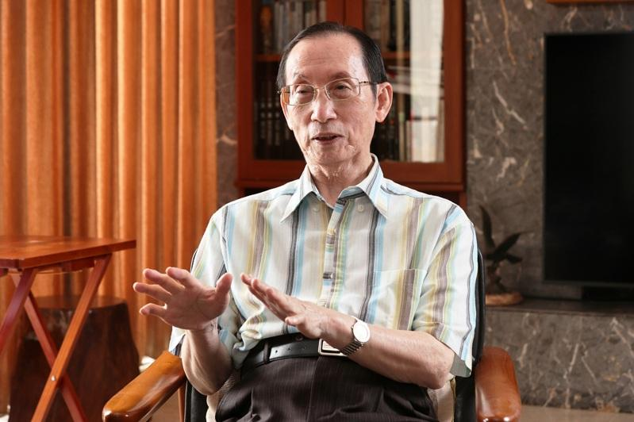

台湾医生诗人曾贵海今天过世，享寿78岁。曾贵海生前曾表示，作家应该先变成一个思想家，全心全力关怀弱势、尊重生命，才能写出跟别人不同的作品。
曾贵海是胸腔科医师、社会运动家与诗人，50多年来书写不辍，大量写出对土地、社会的关怀，把诗写在大地上，更荣获第15届「厄瓜多尔惠夜基国际诗歌节」国际诗人奖，为首次获此殊荣的亚洲诗人，总统赖清德上任后，聘其为国策顾问。
曾贵海长年投入社会运动，但始终不忘诗人身分，他生前曾表示，尽管这个社会读诗、出版诗的人不多，但诗仍旧没有消失，若只能选择一种身分，「我会选择当一个诗人」。
曾贵海曾引用德语诗人里尔克的观念表示，一个真正的诗人要有很多人生经验，关于民主、国家、地方、语言，也要多旅行、感受自然。曾贵海说：「写不出诗，是因为你没有了解事物的内核。」
曾贵海认为，从事社会运动和写诗并不背离，他更感谢娶了一位不会管他、专心把家庭照顾很好的贤内助，「我没有存折，也没有印章，只好去做社会运动」。曾贵海鼓励诗人要更勇敢的站出来，「反抗压迫、不让我们决定自己命运的人」。
曾贵海说，台湾是多族群语言的岛国，形成文学多样性，因此台湾文学的根必然从岛国的土地发芽生长。他提到，「文学是语言的艺术，有语言就有诗，语言创生诗，诗也复活了语言。我试图传达台湾文学的心声，探索台湾人的集体意识和价值观。」
曾贵海1946年生于屏东佳冬，高雄医学院医学系毕业，胸腔内科医师，曾任高雄市民生医院内科主任、高雄基督教医院副院长；他亦曾任卫武营公园促进会长、高雄绿色协会理事长、台湾南社社长、「文学台湾」杂志社社长、台湾笔会理事长、「笠」诗社社长、钟理和文教基金会董事长、文学台湾基金会常务理事。
曾贵海1960年代中期开始发表作品，曾获吴浊流新诗奖、赖和医疗服务奖、高雄市文艺奖、第20届台湾文学家牛津奖、2017年「第7届客家终身贡献奖」。
曾贵海自2000年起，几乎每年至少出版1本作品，至今23本文集，包括诗集、散文集、评论和歌词。